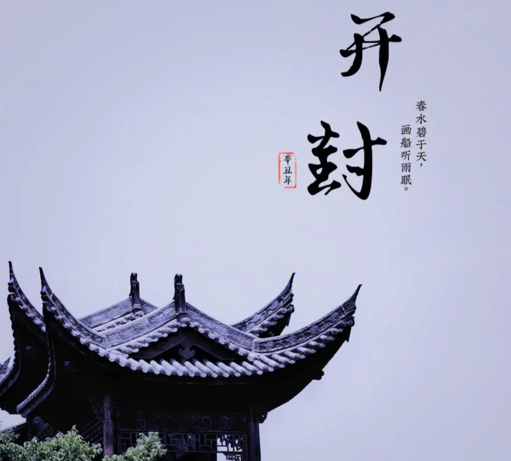
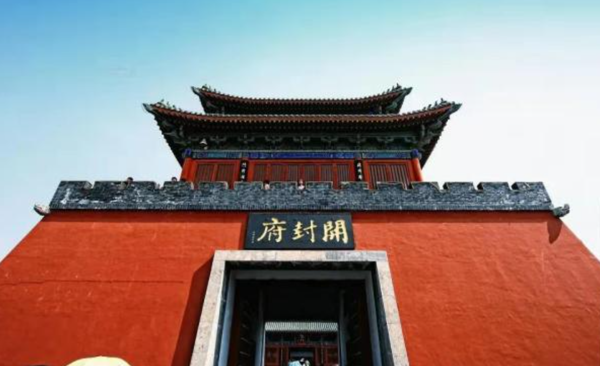
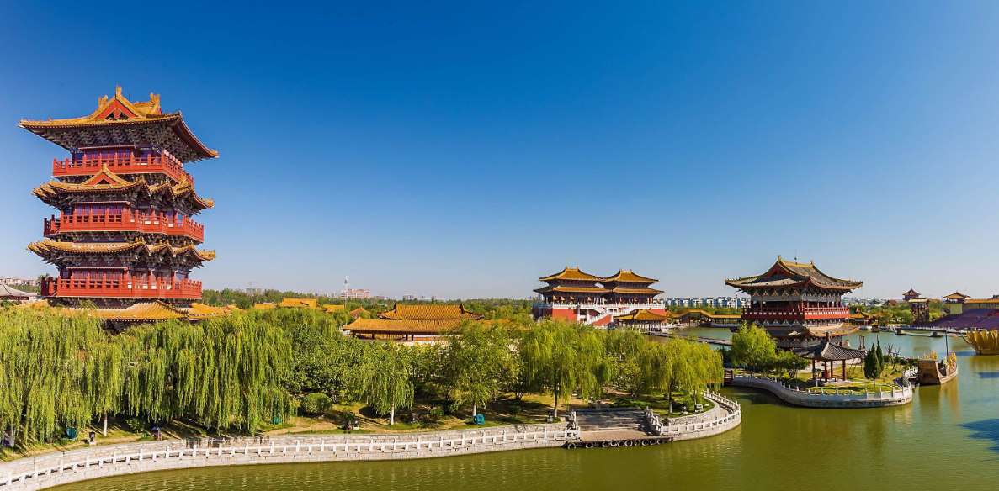
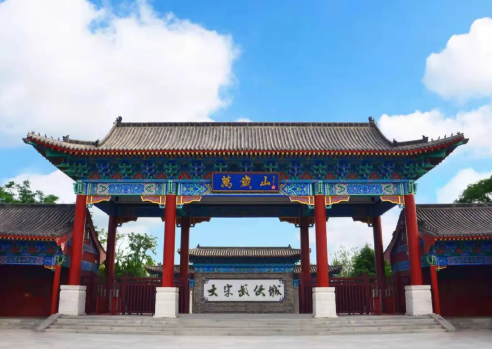

Explore the rich heritage of the ancient capital

Kaifeng is one of China's Eight Great Ancient Capitals, serving as the political, economic, and cultural center for multiple dynasties including the Northern Song Dynasty (960-1127 AD). During the Song era, Kaifeng (then known as Bianjing or Dongjing) was the largest and most prosperous city in the world, with a population exceeding one million. It was the inspiration for the famous painting "Along the River During the Qingming Festival" by Zhang Zeduan, which depicted the bustling urban life of the capital.
Kaifeng served as a capital for eight different periods: the State of Wei during the Warring States period (364-225 BC), the Later Liang (907-923 AD), Later Jin (938-946 AD), Later Han (947-950 AD), and Later Zhou (951-960 AD) of the Five Dynasties period, the Northern Song Dynasty (960-1127 AD), and the Jin Dynasty (1161-1232 AD). The city's urban axis has remained unchanged throughout its history, making it unique among ancient capitals.

Kaifeng is famous for its "Chengduocheng" (city upon city) archaeological phenomenon. Due to repeated flooding from the Yellow River and successive rebuilding, the remains of six ancient cities lie buried beneath the modern city, stacked layer upon layer like geological strata. This makes Kaifeng one of the most remarkable archaeological sites in China, offering a unique window into urban development across multiple dynasties.

Kaifeng is renowned for its rich cultural heritage including traditional Chinese painting (especially the Bian school), woodblock printing, jade carving, and Bian embroidery (one of China's four famous embroidery styles). The city is also famous for its night market culture, a tradition dating back to the Song Dynasty when Kaifeng was the first Chinese city to abolish curfew restrictions.

Modern Kaifeng has made significant efforts to preserve and showcase its historical legacy. The Millennium City Park recreates the Song Dynasty capital in stunning detail. The Iron Pagoda, Dragon Pavilion, and Xiangguo Temple have been carefully restored. The city was designated as one of the first batch of National Historical and Cultural Cities by the Chinese government.
Discover the geography, administration, economy, and culture of modern Kaifeng city.
Learn More →Explore the magnificent landmarks, ancient temples, and beautiful gardens of Kaifeng.
Learn More →Indulge in the legendary street food and traditional delicacies of this ancient capital.
Learn More →